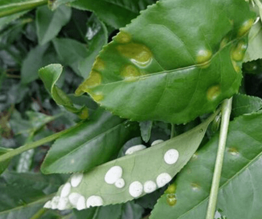
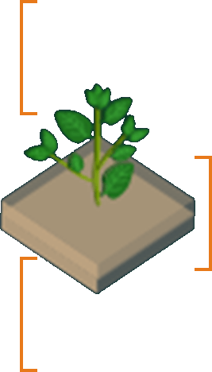

农作物病害查询

作物病害
病害识别系统
稻瘟病
(1/50)

病症症状
叶片出现梭形病斑，病斑中央灰白色，边缘褐色，严重时叶片枯死，穗颈部感染导致白穗
造成原因
高温高湿环境，氮肥施用过量，田间密植通风不良，品种抗性不足，田间积水排水不畅
土壤数据
病害数据
环境数据
10cm 温度30湿度67
20cm 温度30湿度67
30cm 温度30湿度67

生长周期：8周
黏土
10cm茶土：22.88
治理方法：
高温高湿环境，氮肥施用过量，田间密植通风不良，品种抗性不足，田间积水排水不畅
温度：19℃
湿度：52%
降雨量：0mm
蒸发量：0.326mm/h
气压：0.326MPa

硬件设备展示
- 农业无人机
- 田间控制器
- 监控摄像头
- 土壤检测仪


介绍
本模板收集于网络，无需任何付费操作，Gitee免费下载使用
灌溉数据
累计灌溉水量（m2）
23678
灌溉压力（MPa）
0.29
当前灌溉流量（m²/h）
0.78
当前灌溉阀门数量
2
水池液位
2.30

病害数据来源
| 《普通植物病理学》第五版 | 许志刚、胡白石 | 2021年 |
| 《农业植物病理学》第五版 | 高学文、陈孝仁 | 2018年 |
| 《中国农作物病虫害》第三版 | 中国农科院植保所 | 2015年 |
| 《植物病理学》第四版 | 李云锋、杨文香 | 2020年 |
| 《农业植物病理学实验指导》 | 侯明生、蔡丽 | 2019年 |
| 《植物病害诊断与防治》 | 谢联辉、彭友良 | 2017年 |
| 《现代植物病理学》 | 康振生、朱有勇 | 2018年 |
| 《植物病原真菌学》 | 郑小波、王源超 | 2016年 |
| 《植物细菌病害学》 | 方中达、刘凤权 | 2019年 |
| 《植物病毒学》 | 周雪平、李德葆 | 2017年 |
| 《作物病害流行学》 | 马占鸿、万安民 | 2020年 |
| 《植物免疫学》 | 何祖华、王国梁 | 2018年 |
| 《分子植物病理学》 | 张正光、窦道龙 | 2019年 |
| 《植物病害生物防治》 | 沈其荣、徐阳春 | 2017年 |
| 《农药学》第三版 | 袁会珠、杨代斌 | 2020年 |
| 《植物检疫学》 | 叶建仁、吴小芹 | 2018年 |
| 《森林病理学》 | 杨斌、温俊宝 | 2019年 |
| 《果树病理学》 | 董金皋、韩青梅 | 2017年 |
| 《蔬菜病理学》 | 刘西莉、张炳欣 | 2018年 |
| 《粮食作物病害防治》 | 陈利锋、马占鸿 | 2020年 |
| 《经济作物病害学》 | 易图永、朱振东 | 2019年 |
| 《植物病害综合治理》 | 张正光、李世访 | 2018年 |
| 《植物病原线虫学》 | 刘维志、段玉玺 | 2017年 |
| 《植物病害抗性遗传学》 | 何祖华、王石平 | 2019年 |
| 《植物病理学研究方法》 | 方中达、朱振东 | 2016年 |
| 《中国植物病原真菌名录》 | 戴芳澜、俞大绂 | 2015年 |
| 《植物病害诊断图谱》 | 李洪连、林抗美 | 2018年 |
| 《农作物病虫害测报学》 | 程登发、陆庆光 | 2020年 |
| 《植物病害流行预测》 | 马占鸿、万安民 | 2017年 |
| 《现代植物保护学》 | 韩召军、高希武 | 2019年 |